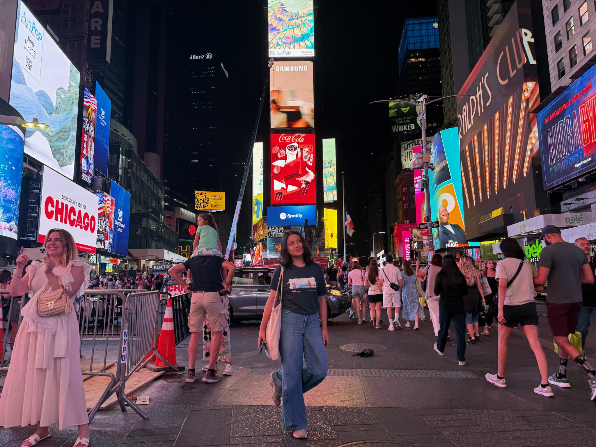
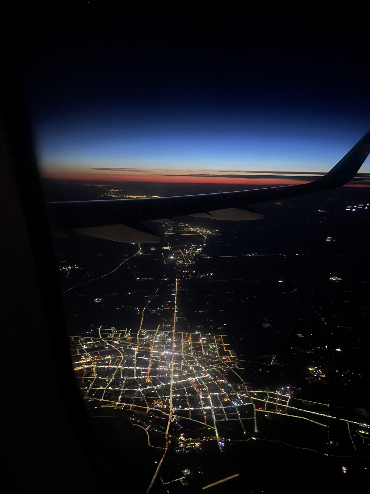

Hi! I'm Nazym, a CS major (Math track) at Minerva University, currently pursuing my studies while traveling and working on projects in different countries (so far I've studied in the USA, Taiwan, South Korea, Argentina, and Japan). I completed my Software Engineering Internship at Gusto!
I'm deeply interested in hard problems like quantum mechanics and machine learning. Beyond technology, I love expressing my creativity through coding and building dynamic 3D experiences. I also love football, Rubik's cubes, and physics!
To see my experience, check out my resume.

Papers I read, things I learn — explained the way I'd sketch them for a friend.

Through my university, I've studied in 5 countries: USA, Taiwan, South Korea, Argentina, and Japan. I want to travel as much as I can!
Manchester United is my life, my source of happiness and pain, my passion, my inspiration, the love of my life. I met them in 2019 in Astana, Kazakhstan, and it was one of the best days of my life. The second time I met them was on August 3, 2025 in Atlanta, Georgia. My GOAT is Bruno Fernandes. I dream of visiting Old Trafford one day.
I rebuilt Old Trafford in 3D. Check out the website:
Go to the websiteHi, I'm Nazym!!
Explore the room to get to know me.
Tap anywhere to continue